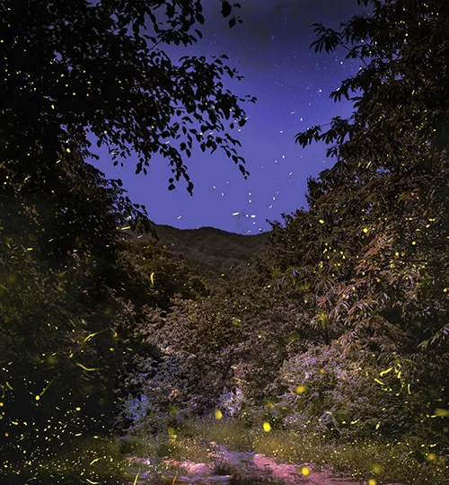
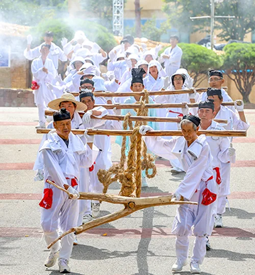
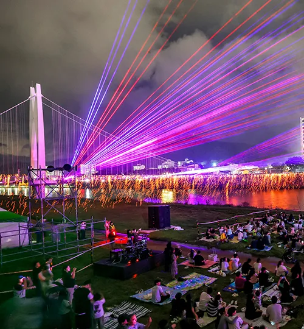

▲ 무주는 반딧불이와 그 먹이인 다슬기 서식지가 천연기념물로 지정된 지역이다 ⓒ 무주반딧불축제 조직위원회
1. 30년째 이어온 축제, 올해도 9일간
2026년은 제30회 무주반딧불축제가 열리는 해입니다. 9월 4일(금)부터 12일(토)까지 9일간, 등나무운동장과 지남공원, 남대천 일원에서 진행됩니다.
1997년 시작된 이 축제의 출발점은 특이합니다. 반딧불이는 깨끗한 환경에서만 사는 환경지표곤충입니다. 무주군은 이 곤충을 축제와 연결해 환경오염의 심각성을 알리는 방식으로 30년을 이어왔습니다.
축제 기간에는 생태·환경 체험과 전통문화 행사, 공연, 야간경관 프로그램이 함께 열립니다. 반디캠핑, 반디별소풍, 글로벌 퍼레이드 같은 참여형 프로그램부터 밤에 강변을 물들이는 빛의 향연까지, 낮과 밤의 볼거리가 나뉘어 있는 구성입니다.

▲ 축제 기간에는 전통문화 재현 프로그램도 함께 진행된다 ⓒ 무주반딧불축제 조직위원회
2. 반딧불이 신비탐사 — 현장 접수는 없다
이 축제의 대표 프로그램은 '반딧불이 신비탐사'입니다. 천연기념물로 지정된 실제 서식지를 걸으며 반딧불이가 내는 빛을 직접 관찰하는 체험형 프로그램입니다.
| 구분 | 내용 |
|---|---|
| 전체 운영 기간 | 8월 28일 ~ 9월 20일 (총 15회) |
| 축제 연계 기간 | 9월 4일 ~ 9월 12일 |
| 운영 시간 | 매일 18:40 ~ 21:00 (9월 14·15일 미운영) |
| 참가비 | 1인 20,000원 (10,000원은 무주사랑상품권으로 환급) |
| 접수 방법 | 축제 공식 홈페이지 인터넷 선착순 (현장 접수 불가) |
여기서 중요한 것은 '현장 접수가 없다'는 문구입니다. 다른 축제 프로그램과 달리 반딧불이 탐사는 당일 무주에 도착했다고 신청할 수 있는 게 아닙니다. 방문 날짜가 정해졌다면 출발 전에 공식 홈페이지에서 먼저 신청하는 것이 순서입니다.
▲ 낮 시간 남대천. 반딧불이는 해가 완전히 진 뒤에야 관찰할 수 있어, 같은 장소라도 낮과 밤의 표정이 다르다 ⓒ 무주반딧불축제 조직위원회
3. 주차장 28곳, 3,236면 — 그런데 셔틀은 주말뿐

▲ 야간 빛의 향연을 즐기는 관람객들. 이런 대형 야간 프로그램이 끝나는 시간대가 귀갓길의 최대 변수다 ⓒ 무주반딧불축제 조직위원회
무주군은 이번 축제를 위해 공영·민간·임시주차장 28곳, 총 3,236면을 확보했습니다. 차 쉼터와 군청 지하주차장 같은 시내권 공영주차장부터 무주장로교회 등 민간 주차장, 무주읍 제2농공단지와 무주생태모험공원의 임시주차장, 그리고 축제 기간 무료로 개방되는 반딧불시장 주차장까지 포함된 규모입니다.
문제는 이 주차장들이 축제장 바로 옆이 아니라는 점입니다. 그래서 임시주차장과 축제장(전통생활문화체험관)을 잇는 셔틀버스가 운영되는데, 이 셔틀은 주말인 4~6일과 11~12일에만, 하루 9대가 약 20분 간격으로 다닙니다. 다시 말해 축제 중간인 평일(7~10일)에는 셔틀 없이 임시주차장에서 축제장까지 직접 걸어야 한다는 뜻입니다.
평일 밤 방문을 계획한다면 임시주차장보다 축제장에 가까운 시내권 공영주차장을 우선 고려하는 편이 낫습니다. 걷는 거리가 셔틀 유무를 대신할 유일한 변수이기 때문입니다.
4. 4·5·12일 밤엔 무주교가 막힌다
▲ 거리 퍼레이드가 열리는 날은 도심 교통이 함께 영향을 받는다 ⓒ 무주반딧불축제 조직위원회
대규모 야간 프로그램이 몰리는 4일, 5일, 12일은 별도의 통행 제한이 있습니다. 이 사흘은 밤 9시 30분부터 11시까지 보행자 안전을 위해 무주교 차량 통행이 통제됩니다. 축제 개막일과 마지막 날, 그리고 그 사이 첫 주말에 해당하는 날짜입니다.
이 시간대를 피하려면 두 가지 방법이 있습니다. 통제가 시작되는 9시 30분 이전에 무주교를 건너 미리 이동해 두거나, 아니면 밤 11시 통제 해제 이후로 귀가 시각을 늦추는 것입니다.
주요 구간 21곳에는 교통 흐름을 관리하는 인력 75명이 배치됩니다. 또 축제 기간에는 주정차 CCTV 단속이 한시적으로 중단되고, 군청 누리집과 축제 공식 SNS를 통해 실시간 주차장 운영 상황이 안내됩니다. 도보 이동이나 카풀도 함께 권장되는 방식입니다.
먼 지역에서 온다면 카카오T 광역 셔틀도 고려할 만합니다. 4·5·6·11·12일에는 수도권과 광주·대구·대전·부산 등 전국 13개 지역을 무주와 직접 연결하는 카카오T 광역 셔틀이 별도로 운행됩니다. 장거리 자차 이동 대신 이 셔틀을 이용하면 무주교 통제나 임시주차장 위치를 아예 신경 쓰지 않아도 됩니다.
5. 정리 — 평일과 주말의 전략이 다르다
이 축제에서 자차 전략은 요일에 따라 완전히 갈립니다.
주말(4~6일, 11~12일)에 방문한다면 셔틀버스가 다니는 임시주차장을 이용해도 무리가 없습니다. 다만 4·5·12일 밤 9시 30분~11시 무주교 통제 시간만 피하면 됩니다.
평일(7~10일)에 방문한다면 셔틀버스가 없다는 점을 감안해 처음부터 축제장에 가까운 시내권 공영주차장을 목표로 삼는 편이 낫습니다.
어느 요일이든 공통적으로 챙길 것은 반딧불이 신비탐사 사전 예약입니다. 현장에서 즉흥적으로 신청할 수 없는 프로그램이므로, 방문 날짜가 정해지는 즉시 홈페이지에서 자리를 확보해 두는 것이 이번 축제 계획의 첫 단추입니다.